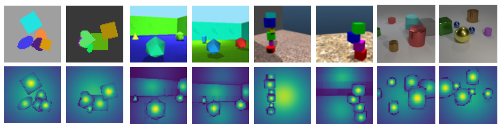

Figure 1. Compactness scores obtained for each pixel in the scene, across four different datasets. The transition from bright yellow to deep purple signifies decreasing compactness. To obtain these scores, a trained COCA-Net encoder is used to generate object masks. Each object mask is then broadcasted to pixels based on the pixel-object assignments. This operation associates every pixel with a copy of its object’s mask. Finally, compactness scores for each pixel’s mask are calculated via Eq. 3 of the paper.
We propose the Compact Clustering Attention (COCA) layer, an effective building block that introduces a hierarchical strategy for object-centric representation learning, while solving the unsupervised object discovery task on single images. COCA is an attention-based clustering module capable of extracting object-centric representations from multi-object scenes, when cascaded into a bottom-up hierarchical network architecture, referred to as COCA-Net. At its core, COCA utilizes a novel clustering algorithm that leverages the physical concept of compactness, to highlight distinct object centroids in a scene, providing a spatial inductive bias. Thanks to this strategy, COCA-Net generates high-quality segmentation masks on both the decoder side and, notably, the encoder side of its pipeline. Additionally, COCA-Net is not bound by a predetermined number of object masks that it generates and handles the segmentation of background elements better than its competitors. We demonstrate COCA-Net’s segmentation performance on six widely adopted datasets, achieving superior or competitive results against the state-of-the-art models across nine different evaluation metrics.